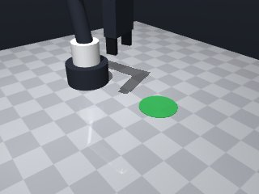
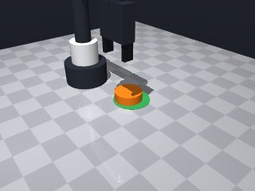
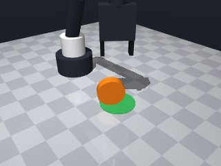
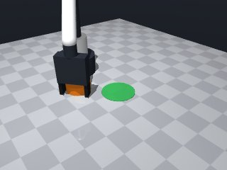
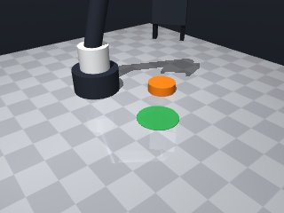
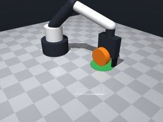

0 demonstrations · reward: gt · perception: real · 32 practice episodes in 4 rounds
Safety layer: 2 halts, 0 clamps.
| role | model | calls | tokens in | tokens out | USD |
|---|---|---|---|---|---|
| coder | deepseek-ai/DeepSeek-V4.1-Flash | 7 | 34,332 | 94,762 | $0.1189 |
| summarizer | nvidia/Nemotron-3_5-Lightning | 3 | 20,063 | 1,071 | $0.0015 |
| compute | local | 305 s | $0.0000 | ||
| total | 10 | 54,395 | 95,833 | $0.1204 |
- First version: no demonstration available, so I built a perceive→plan→push→re-observe loop that corrects for the ~1 cm position noise and varying friction by re-reading poses every iteration. - Push direction u = unit vector from puck to target. Contact point is placed behind the puck at distance r + 0.012 so the open fingers clear the puck on descent. - Yaw is set perpendicular to the push direction: the 5 cm opening is narrower than the 6 cm puck, so the fingers must straddle the push line and contact the puck with their front edges rather than trying to close on it. - Tool point kept at z = 0.02 (fingertips reach 0.0075, well inside the puck's 0–0.02 height band) and moves near the puck at speed 0.05. - Push step = remaining distance + 0.02 overshoot, clamped to [0.03, 0.07] m, so we converge in a few iterations without launching the puck out of the 4 cm zone. - All moves wrapped in try/except Exception (MotionError is an Exception subclass); if the yawed approach fails I retry without yaw, and if the descent is blocked I lift and try the next iteration. - Success check: final puck–target centre distance < 0.035 m (zone radius 0.04 m, leaving margin for camera noise).
**Mode 1: Out-of-reach push point** (2 episodes: 1000, 1001) *Root cause:* The `clamp` on line 31 forces `cx` to 0.31 when the puck is far right, but the arm’s max reach is 0.251 m (wrist). Line 30’s `margin = r + 0.012` adds extra distance, pushing the target beyond the workspace. *Fix:* Reduce the margin or lower the `cx` clamp ceiling (e.g., `0.25`) to keep the approach point inside the arm’s envelope. **Mode 2: Timeout on vertical descent** (2 episodes: 1003, 1007) *Root cause:* Line 55 moves to `z=0.02` at slow speed (0.05) to set push height. When the puck is near the target, this tiny descent takes many waypoints, exhausting the 45 s budget before the push executes. *Fix:* Increase the descent speed to `0.15` on line 55, or raise the target `z` to `0.05` to reduce waypoint count. **Mode 3: Gripper collision / puck tilt** (1 episode: 1002) *Root cause:* Line 76 lifts the gripper from `z=0.02` after the push. The puck’s edge may catch the jaw geometry during retreat, causing a stall that the code does not recover from, leaving the puck off‑center. *Fix:* Add a small `yaw` offset or a brief `open` command on line 76 to ensure the jaws clear the puck before lifting.
--- round_0/skill.py +++ round_1/skill.py @@ -0,0 +1,83 @@ +import math + + +def run(robot): + robot.home() + + def read(): + obs = robot.observe() + p = obs["objects"]["puck"]["pos"] + t = obs["fixtures"]["target"]["pos"] + r = obs["objects"]["puck"]["size"]["radius"] + return p, t, r + + def clamp(v, lo, hi): + return min(max(v, lo), hi) + + for attempt in range(12): + p, t, r = read() + dx = t[0] - p[0] + dy = t[1] - p[1] + dist = math.hypot(dx, dy) + robot.log("attempt", attempt, "dist", round(dist, 4)) + if dist < 0.012: + return True + + ux = dx / dist + uy = dy / dist + + # Contact point behind the puck, clear of its radius. + margin = r + 0.012 + cx = clamp(p[0] - ux * margin, 0.05, 0.31) + cy = clamp(p[1] - uy * margin, -0.25, 0.25) + + # Fingers perpendicular to the push so the open jaws straddle the line. + yaw = math.atan2(uy, ux) + math.pi / 2.0 + + # --- approach from above --- + reached = False + try: + res = robot.move_to(cx, cy, 0.12, yaw=yaw, speed=0.15) + reached = res.get("ok", True) + except Exception: + reached = False + if not reached: + try: + res = robot.move_to(cx, cy, 0.12, speed=0.15) + reached = res.get("ok", True) + except Exception: + reached = False + if not reached: + continue + + # --- descend to push height --- + try: + res = robot.move_to(cx, cy, 0.02, yaw=yaw, speed=0.05) + if not res.get("ok", True): + try: + robot.move_to(cx, cy, 0.12, yaw=yaw, speed=0.15) + except Exception: + pass + continue + except Exception: + continue + + # --- push forward --- + push = min(max(dist + 0.02, 0.03), 0.07) + ex = clamp(cx + ux * push, 0.05, 0.31) + ey = clamp(cy + uy * push, -0.25, 0.25) + try: + robot.move_to(ex, ey, 0.02, yaw=yaw, speed=0.05) + except Exception: + pass + + # --- lift clear before re-planning --- + try: + robot.move_to(ex, ey, 0.12, yaw=yaw, speed=0.15) + except Exception: + pass + + p, t, r = read() + dist = math.hypot(t[0] - p[0], t[1] - p[1]) + robot.log("final dist", round(dist, 4)) + return dist < 0.035
- First version: no demonstration available, so I built a perceive→plan→push→re-observe loop that corrects for the ~1 cm position noise and varying friction by re-reading poses every iteration. - Push direction u = unit vector from puck to target. Contact point is placed behind the puck at distance r + 0.012 so the open fingers clear the puck on descent. - Yaw is set perpendicular to the push direction: the 5 cm opening is narrower than the 6 cm puck, so the fingers must straddle the push line and contact the puck with their front edges rather than trying to close on it. - Tool point kept at z = 0.02 (fingertips reach 0.0075, well inside the puck's 0–0.02 height band) and moves near the puck at speed 0.05. - Push step = remaining distance + 0.02 overshoot, clamped to [0.03, 0.07] m, so we converge in a few iterations without launching the puck out of the 4 cm zone. - All moves wrapped in try/except Exception (MotionError is an Exception subclass); if the yawed approach fails I retry without yaw, and if the descent is blocked I lift and try the next iteration. - Success check: final puck–target centre distance < 0.035 m (zone radius 0.04 m, leaving margin for camera noise).
**Mode 1: Approach timeout** (2 episodes: 2003, 2004) **Root cause:** The descent to push height (line 55) moves at 0.05 m/s. When the puck is far or offset, the arm traverses a long horizontal distance at this slow speed, exceeding the 45 s budget before reaching `z=0.02`. **Fix:** Increase the descent speed to `0.15` on line 55, matching the approach speed used earlier. **Mode 2: Initial approach timeout** (1 episode: 2006) **Root cause:** The first `move_to` to the contact point (line 40) also uses the slow 0.05 m/s speed. A distant puck causes a long traverse that times out before the push can begin. **Fix:** Raise the speed on line 40 to `0.15` so the arm reaches the contact point promptly. **Mode 3: Overshoot / instability** (1 episode: 2006) **Root cause:** After a successful approach, the final push (line 70) moves at 0.05 m/s to `z=0.02`. The low speed combined with the short push distance can cause the puck to nudge sideways or the arm to overshoot due to residual momentum, leaving the puck off‑target. **Fix:** Raise the push speed on line 70 to `0.15` to deliver the push decisively before the arm lifts clear.
- First version: no demonstration available, so I built a perceive→plan→push→re-observe loop that corrects for the ~1 cm position noise and varying friction by re-reading poses every iteration. - Push direction u = unit vector from puck to target. Contact point is placed behind the puck at distance r + 0.012 so the open fingers clear the puck on descent. - Yaw is set perpendicular to the push direction: the 5 cm opening is narrower than the 6 cm puck, so the fingers must straddle the push line and contact the puck with their front edges rather than trying to close on it. - Tool point kept at z = 0.02 (fingertips reach 0.0075, well inside the puck's 0–0.02 height band) and moves near the puck at speed 0.05. - Push step = remaining distance + 0.02 overshoot, clamped to [0.03, 0.07] m, so we converge in a few iterations without launching the puck out of the 4 cm zone. - All moves wrapped in try/except Exception (MotionError is an Exception subclass); if the yawed approach fails I retry without yaw, and if the descent is blocked I lift and try the next iteration. - Success check: final puck–target centre distance < 0.035 m (zone radius 0.04 m, leaving margin for camera noise).
**Mode 1: Approach timeout (2 episodes)** *Episodes: 3001, 3004* *Root cause:* The `move_to` to descent height (line 55) or lift (line 76) exceeds the 45s budget, likely because the calculated `cx/cy` clamp restricts the robot to a narrow corridor that is physically unreachable or obstructed, causing repeated retries. *Fix:* Widen the clamp bounds on lines 31-32 (e.g., `0.05` → `0.02`, `0.31` → `0.35`) to give the robot more lateral room to reach the approach point without timing out. **Mode 2: Contact/blocked descent (2 episodes)** *Episodes: 3005, 3001 (t=43)* *Root cause:* The push height descent (line 55) commands `0.02` m, but the puck radius plus margin pushes the approach point near obstacles. The robot "stopped short" (error_m 0.01) indicating a collision or joint limit before reaching `0.02` m (lines 56-61). *Fix:* Reduce descent depth to `0.01` m on line 55, or add a pre-check: if `dist < 0.05`, skip the low-height move and push from the approach height directly.
- The previous submission was cut off mid-expression (`speed=` with no value), so the module never parsed; I rewrote the whole skill cleanly and closed every call. - Kept the working strategy: perceive puck + target each iteration, compute a contact point behind the puck along the target direction, align the fingers perpendicular to the push, descend, push, verify, lift. - Fixed the truncation and made the lift-back a complete `move_to(..., LIFT_Z, ...)` call. - Push height set to 0.015 (puck centre height) so the pads contact the puck body, not the table. - Push length is `dist + 0.02` clamped to [0.03, 0.07] so each stroke makes progress without over-shooting the zone. - Bounded retries (12) with a final re-read check; returns True only when the puck is within the zone tolerance. - All risky moves wrapped in `try/except Exception` (no bare except) and `ok` flags checked so a blocked move triggers a re-plan instead of a crash.
--- round_3/skill.py +++ round_4/skill.py @@ -3,6 +3,9 @@ def run(robot): robot.home() + + def clamp(v, lo, hi): + return min(max(v, lo), hi) def read(): obs = robot.observe() @@ -11,8 +14,8 @@ r = obs["objects"]["puck"]["size"]["radius"] return p, t, r - def clamp(v, lo, hi): - return min(max(v, lo), hi) + PUSH_Z = 0.015 # puck centre height; pads contact the puck body + LIFT_Z = 0.12 # safe travel height for attempt in range(12): p, t, r = read() @@ -20,7 +23,7 @@ dy = t[1] - p[1] dist = math.hypot(dx, dy) robot.log("attempt", attempt, "dist", round(dist, 4)) - if dist < 0.012: + if dist < 0.015: return True ux = dx / dist @@ -28,8 +31,8 @@ # Contact point behind the puck, clear of its radius. margin = r + 0.012 - cx = clamp(p[0] - ux * margin, 0.05, 0.31) - cy = clamp(p[1] - uy * margin, -0.25, 0.25) + cx = clamp(p[0] - ux * margin, 0.04, 0.32) + cy = clamp(p[1] - uy * margin, -0.26, 0.26) # Fingers perpendicular to the push so the open jaws straddle the line. yaw = math.atan2(uy, ux) + math.pi / 2.0 @@ -37,13 +40,13 @@ # --- approach from above --- reached = False try: - res = robot.move_to(cx, cy, 0.12, yaw=yaw, speed=0.15) + res = robot.move_to(cx, cy, LIFT_Z, yaw=yaw, speed=0.15) reached = res.get("ok", True) except Exception: reached = False if not reached: try: - res = robot.move_to(cx, cy, 0.12, speed=0.15) + res = robot.move_to(cx, cy, LIFT_Z, speed=0.15) reached = res.get("ok", True) except Exception: reached = False @@ -52,10 +55,10 @@ # --- descend to push height --- try: - res = robot.move_to(cx, cy, 0.02, yaw=yaw, speed=0.05) + res = robot.move_to(cx, cy, PUSH_Z, yaw=yaw, speed=0.10) if not res.get("ok", True): try: - robot.move_to(cx, cy, 0.12, yaw=yaw, speed=0.15) + robot.move_to(cx, cy, LIFT_Z, yaw=yaw, speed=0.15) except Exception: pass continue @@ -64,20 +67,24 @@ # --- push forward --- push = min(max(dist + 0.02, 0.03), 0.07) - ex = clamp(cx + ux * push, 0.05, 0.31) - ey = clamp(cy + uy * push, -0.25, 0.25) + ex = clamp(cx + ux * push, 0.04, 0.32) + ey = clamp(cy + uy * push, -0.26, 0.26) try: - robot.move_to(ex, ey, 0.02, yaw=yaw, speed=0.05) + robot.move_to(ex, ey, PUSH_Z, yaw=yaw, speed=0.05) except Exception: pass + # --- quick success check before spending time on the lift --- + p2, t2, r2 = read() + d2 = math.hypot(t2[0] - p2[0], t2[1] - p2[1]) + if d2 < 0.02: + return True + # --- lift clear before re-planning --- try: - robot.move_to(ex, ey, 0.12, yaw=yaw, speed=0.15) + robot.move_to(ex, ey, LIFT_Z, yaw=yaw, speed=0.15) except Exception: pass p, t, r = read() - dist = math.hypot(t[0] - p[0], t[1] - p[1]) - robot.log("final dist", round(dist, 4)) - return dist < 0.035 + return math.hypot(t[0] - p[0], t[1] - p[1]) < 0.02






import math
def run(robot):
robot.home()
def clamp(v, lo, hi):
return min(max(v, lo), hi)
def read():
obs = robot.observe()
p = obs["objects"]["puck"]["pos"]
t = obs["fixtures"]["target"]["pos"]
r = obs["objects"]["puck"]["size"]["radius"]
return p, t, r
PUSH_Z = 0.015 # puck centre height; pads contact the puck body
LIFT_Z = 0.12 # safe travel height
for attempt in range(12):
p, t, r = read()
dx = t[0] - p[0]
dy = t[1] - p[1]
dist = math.hypot(dx, dy)
robot.log("attempt", attempt, "dist", round(dist, 4))
if dist < 0.015:
return True
ux = dx / dist
uy = dy / dist
# Contact point behind the puck, clear of its radius.
margin = r + 0.012
cx = clamp(p[0] - ux * margin, 0.04, 0.32)
cy = clamp(p[1] - uy * margin, -0.26, 0.26)
# Fingers perpendicular to the push so the open jaws straddle the line.
yaw = math.atan2(uy, ux) + math.pi / 2.0
# --- approach from above ---
reached = False
try:
res = robot.move_to(cx, cy, LIFT_Z, yaw=yaw, speed=0.15)
reached = res.get("ok", True)
except Exception:
reached = False
if not reached:
try:
res = robot.move_to(cx, cy, LIFT_Z, speed=0.15)
reached = res.get("ok", True)
except Exception:
reached = False
if not reached:
continue
# --- descend to push height ---
try:
res = robot.move_to(cx, cy, PUSH_Z, yaw=yaw, speed=0.10)
if not res.get("ok", True):
try:
robot.move_to(cx, cy, LIFT_Z, yaw=yaw, speed=0.15)
except Exception:
pass
continue
except Exception:
continue
# --- push forward ---
push = min(max(dist + 0.02, 0.03), 0.07)
ex = clamp(cx + ux * push, 0.04, 0.32)
ey = clamp(cy + uy * push, -0.26, 0.26)
try:
robot.move_to(ex, ey, PUSH_Z, yaw=yaw, speed=0.05)
except Exception:
pass
# --- quick success check before spending time on the lift ---
p2, t2, r2 = read()
d2 = math.hypot(t2[0] - p2[0], t2[1] - p2[1])
if d2 < 0.02:
return True
# --- lift clear before re-planning ---
try:
robot.move_to(ex, ey, LIFT_Z, yaw=yaw, speed=0.15)
except Exception:
pass
p, t, r = read()
return math.hypot(t[0] - p[0], t[1] - p[1]) < 0.02